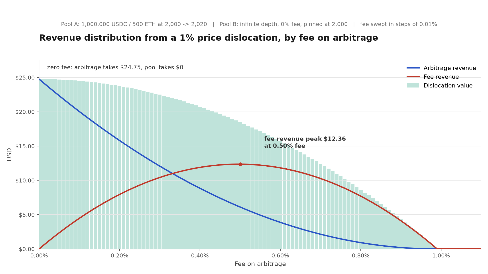
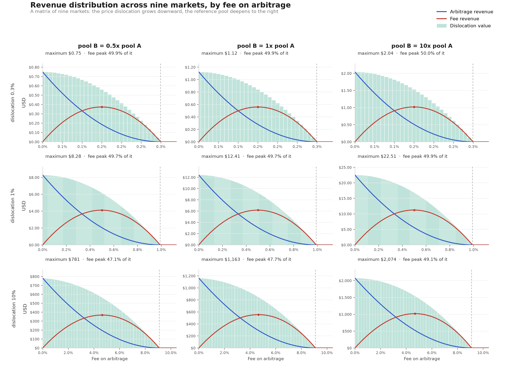

DeFi markets are efficient at the macro scale but constantly dislocated at the micro level. We find that an AMM maximizes the value released by a dislocation by charging a zero fee on the arbitrage that closes it — and that on today's markets, where the pool and the arbitrageur are independent, competitive participants, that value is never fully realized.
Introduction
Suppose that after some arbitrary event the market is in an inefficient state, an arbitrage opportunity exists, and there is an arbitrageur who will execute it as efficiently as possible.
A dislocation has at most two claimants: the arbitrageur keeps a profit, and the pool keeps a fee.1 We call their sum the dislocation value: everything the market inefficiency releases, no matter who ends up holding it.
The pool controls one parameter, the fee on arbitrage, and it determines two things:
- how large the dislocation value is;
- what share of it the pool keeps as fees.
The rest of this essay measures both effects. Table 1 collects the terms used throughout.
| Term | Meaning |
|---|---|
| Pool A | the volatile pool, whose price a retail swap knocks off the market price |
| Pool B | the reference pool, which holds the initial market price. The arbitrageur executes the arbitrage against this pool |
| δ | the price dislocation: the price spread between the volatile pool and the reference pool, in percent, measured against the reference price, δ = (PA − PB)/PB |
| f | the fee on arbitrage: the fee the AMM charges on the arbitrage operation. This is not the retail fee, which stays positive throughout |
| Arbitrage revenue | the profit the arbitrageur keeps after executing the optimally sized arbitrage |
| Fee revenue | the fee the pool collects on the arbitrage swap |
| Dislocation value | arbitrage revenue plus fee revenue |
| Value left unrealized | dislocation value at f = 0 minus dislocation value at f |
The simulation: a numerical estimate of dislocation value
We estimated the behavior of the dislocation value numerically, by simulating the arbitrage across a range of fees on arbitrage.2 The result is clear: at a zero fee on arbitrage, the dislocation yields its maximum value. At any positive fee, part of that value disappears — not transferred to anyone, but left unrealized.
Results of the simulation
At a zero fee on arbitrage the dislocation yields its maximum, $24.75, and every cent of it goes to the arbitrageur. At 0.9901% and above, the fee exceeds what the arbitrageur can recover from the dislocation: the arbitrage never happens, the pool earns nothing, and the mispricing simply stands. Figure 1 shows the whole sweep.

Three things follow:
- The maximum dislocation value is reached at a zero fee on arbitrage. Every increase in f lowers it, monotonically. At the fee that maximizes fee revenue the total has already fallen to $18.47, which is 74.62% of the maximum. The missing 25.38% is not transferred to anyone. It is left unrealized in the pool as an unclosed dislocation, because the arbitrage stops before the pool has been re-priced.
- The maximum fee revenue is reached at a fee of about δ/2. In our case the optimal fee is 0.50%, and it extracts $12.36, or 49.94% of the maximum dislocation value.
- A constant fee is optimal for exactly one dislocation size and wrong for every other. At the conventional 0.30% the pool takes $10.42, which is 42.08% of the maximum, while the arbitrageur still realizes $12.08. Against a dislocation of 0.3%, that same 0.30% fee sits above the point where arbitrage stops, so the pool earns nothing at all.
Robustness across markets and AMM formulas
We repeated the sweep across nine markets (Figure 2): pool B at 0.5x, 1x and 10x the liquidity of pool A, and δ at 0.3%, 1% and 10%. The shape is universal — only the dollar scale changes. The fee-revenue peak varies from 49.9–50.0% of the maximum at a 0.3% dislocation to 47.1–49.1% at a 10% one, approaching 50% as the dislocation gets small.

The same holds under other AMM formulas. We ran the same sweep on six architectures: Uniswap V2, Uniswap V3 concentrated liquidity, Balancer weighted, Curve CryptoSwap, Trader Joe Liquidity Book and DODO PMM. The zero-fee optimum holds on every one of them, at every dislocation size we tested. The maximum fee revenue, however, varies with the AMM formula, and each type of AMM needs its own treatment.
Generalization: two propositions
Neither property is a special case of one pool. Both are fundamental properties of how the dislocation value of an AMM behaves on an inefficient market. We state them as two propositions.
Proposition 1 (Zero-Fee Joint Optimum). Charging a fee on arbitrage never increases the dislocation value. Therefore, the maximum dislocation value is always achieved at zero fee.
Scope. Proposition 1 holds for any AMM whose marginal price is non-decreasing and integrable: continuous curves, piecewise smooth curves such as concentrated liquidity, and discrete step functions such as a liquidity book. It also holds when the reference pool has finite depth. Appendix A states the axioms and proves both cases (Theorems A.1 and A.4).
Proposition 2 (The 50% Ceiling for Constant Product AMMs). For a constant-product AMM where the marginal price is p(x) = k/x², and a small dislocation, a liquidity provider who tunes the fee on arbitrage to maximize its own fee revenue captures approximately 50% of the zero-fee maximum.
Appendix A proves it as Theorem A.2. Unlike Proposition 1, this one is not universal. For a general AMM whose price impact curve has non-linear local curvature, the peak fee revenue under an optimally tuned fee is not necessarily 50% of the maximum: the exact ceiling depends on the local elasticity of the price impact curve. The direction of the argument never changes, because a positive fee never increases the dislocation value.
AMM liquidity provider and arbitrageur: from adversaries to convergence
Here lies the paradox: the pool maximizes dislocation value at a zero fee, but a zero fee means gifting the profit to an external searcher. The pool has no reason to quote a zero fee to an outsider who will keep the proceeds. The arbitrageur has no reason to hand its profit to the pool. The positions of both players are rational, and each of them seeks to maximize its own profit.
As a result of these independent actions, part of the dislocation value is left unrealized. On a live market the price dislocation is often smaller than the fee, or only slightly larger, and as a result what is left unrealized is not 25% but most of the potential dislocation value.
Moreover, an AMM often has no way at all to distinguish an arbitrage swap from an ordinary retail swap, cannot calculate the price dislocation, and cannot set an optimal fee on such an operation.
The solution is to merge the roles of the AMM and the arbitrageur. AMM hooks made this technically possible. They allow the rebalancing arbitrage to execute atomically, in the same transaction as the retail swap, through an afterSwap hook. The pool grants the exclusive right to rebalance itself to its own logic. No external searcher can capture the rebalance, because there is no window between the user's swap and the pool's own reaction.
Two conditions make this work:
- The zero fee applies only to the pool-initiated arbitrage operation. Retail traders keep paying a normal fee, and that fee is what pays the pool for providing liquidity.
- Execution is internal and atomic. There is no competition with other searchers for the right to execute, no priority fee auction and no MEV leakage to a builder.
Arbitrage is not a standalone operation. It is a reaction to the user's swap, opposite in direction, and it drives the pool back toward the state it started in. How far back depends on the depth of the reference pool and on the fee: against a deep reference pool at a zero fee the pool returns almost exactly to its starting composition and price, while a shallower one or a positive fee leaves part of the divergence standing. So internalizing the rebalance does not only add revenue, it also undoes part of the divergence that the user's swap created.
MEV-X Homelander is a solution that does exactly this. It is a plugin compatible with the Uniswap V4, PancakeSwap and Algebra protocols. Powered by afterSwap hooks, the plugin analyses and performs fully on-chain arbitrage after the user's swap, pushing the dislocation value toward its maximum and internalizing it for the liquidity providers.
Conclusions
- The maximum dislocation value available from a market inefficiency is the value of arbitraging it at a zero fee. Every fee schedule is a deduction from that number.
- For the constant-product curve, and any curve whose price impact is locally linear, the quadratic f(δ − f) law caps fee revenue at approximately 50% of the maximum when the dislocation is small, with the remainder split between the arbitrageur and value left unrealized.
- Maximizing the dislocation value of an AMM on an inefficient market runs through the convergence of the liquidity provider and arbitrageur roles via atomic execution. MEV-X Homelander implements this solution using
afterSwaphooks to internalize arbitrage revenue for liquidity providers.
This is one piece of a larger effort at MEV-X to make AMM yield work for the people who actually create the value — the liquidity providers, not just whoever sits on top of them. We regularly publish research alongside product updates and protocol notes as we build out Homelander.
Appendix A. Axiomatic framework and proofs
A.1 Axiomatic framework for general AMMs
To generalize the analysis across the diverse landscape of automated market makers, we abstract away from specific invariants and define an AMM through its marginal spot price function. Let the pool hold reserves of two assets, and let x denote the reserve of the asset the arbitrageur is purchasing. The marginal price of this asset in terms of the other asset is given by a function p(x).
To accommodate not only continuous convex curves but also piecewise smooth curves (e.g., concentrated liquidity) and discrete step-functions (e.g., liquidity books), we relax the traditional smoothness assumptions and impose the following axioms.
Axiom A.1 (Monotonicity and Integrability). The marginal price function p(x) is a non-decreasing, Riemann-integrable function on any compact subinterval of its domain. For discrete AMMs, p(x) may be a right-continuous step-function. This axiom ensures that the price impact is well-defined, the total exchanged value (the integral of p(x)) is finite, and the pool naturally resists large trades.
Axiom A.2 (Boundary Conditions and Strictness in Active Regions). The price function spans the necessary range to intersect any finite reference price pext. Specifically, inf p(x) < pext < sup p(x). Furthermore, p(x) is strictly increasing on any interval where p(x) ≠ pext, ensuring a unique crossing point and preventing degenerate arbitrage loops.
Verification across AMM architectures. The relaxed axioms are specifically designed to encompass the full spectrum of modern AMM designs:
- Continuous convex AMMs (Uniswap V2, Balancer, Curve CryptoSwap): the marginal price p(x) is continuous, strictly increasing, and infinitely differentiable. They trivially satisfy Axioms A.1 and A.2.
- Piecewise smooth AMMs (Uniswap V3, DODO PMM): the marginal price p(x) is continuous but only piecewise differentiable. In Uniswap V3, p(x) changes its derivative at tick boundaries due to liquidity shifts. In DODO, the piecewise maximum function creates a kink at the base reserve. Both are continuous, strictly increasing, and Riemann-integrable, satisfying the relaxed Axiom A.1.
- Discrete step-function AMMs (Trader Joe Liquidity Book): the marginal price p(x) is a non-decreasing step-function, constant within each bin and jumping at bin boundaries. It is not differentiable, nor strictly increasing everywhere, but it is non-decreasing and Riemann-integrable, perfectly satisfying the relaxed Axiom A.1.
A.2 The general AMM framework and the zero-fee joint optimum
When a retail trader initiates a swap, they shift the pool reserves from an initial state x0 to a new state x1, moving the internal spot price from p(x0) to p(x1). This creates a price dislocation relative to the reference pool, denoted as pext. Without loss of generality, assume the retail trade pushed the internal price above the reference price, so p(x1) > pext. The arbitrageur's objective is to sell the asset back into the pool, increasing the reserve x until the internal price converges with the reference price.
In the presence of a swap fee f levied on the input leg, the arbitrageur faces a modified marginal cost. The optimal arbitrage volume is determined by the marginal equilibrium condition:
p(x*) · (1 − f) = pext ⟹ p(x*) = pext / (1 − f)
Because p(x) is non-decreasing by Axiom A.1, and the target price pext/(1 − f) is strictly increasing with respect to f, the terminal reserve state x*(f) must be a non-increasing function of f. At f = 0, the terminal state is x*(0), where p(x*(0)) = pext. Any positive fee strictly truncates the arbitrage volume before the true price equilibrium is reached.
The dislocation value is the area between the internal AMM curve and the reference price, integrated over the executed volume:
Π(f) = ∫ [x1 → x*(f)] (p(x) − pext) dx
Theorem A.1 (Zero-Fee Joint Optimum). Consider an automated market maker satisfying Axioms A.1 and A.2. Let a retail swap create a price dislocation such that p(x1) > pext. Let f ∈ [0, 1) be the fee applied to the arbitrageur's input leg. The dislocation value Π(f), the arbitrageur's profit plus the pool's fee revenue, never rises as f rises, for as long as arbitrage still happens. Its maximum is therefore reached at f = 0.
Proof. By Axiom A.2, for all x in the interval [x1, x*(0)), we have p(x) ≥ p(x1) > pext. Thus, the integrand g(x) = p(x) − pext is strictly positive almost everywhere on this interval.
We have established that the terminal reserve x*(f) is a non-increasing function of f. Therefore, for any f2 > f1 ≥ 0, the integration interval [x1, x*(f2)] is a strict subset of [x1, x*(f1)].
Since the integrand is strictly positive, integrating over a strictly smaller interval yields a strictly smaller result. Hence, Π(f2) < Π(f1) for all f2 > f1 ≥ 0. This proves that the dislocation value is a strictly decreasing function of the fee. The global maximum is achieved exclusively at the boundary f = 0. ∎
Crucially, this proof relies solely on the monotonicity and integrability of p(x) (Axiom A.1), making it universally valid for continuous, piecewise smooth, and discrete step-function AMMs alike.
A.3 The 50% ceiling: a constant-product artifact
While the zero-fee joint optimum is universal, the specific claim that the liquidity provider captures 50% of the zero-fee maximum under an optimally tuned positive fee requires closer scrutiny. In the constant product model, the spot price is p(x) = k/x². The arbitrage volume scales linearly with the remaining spread, leading to the quadratic revenue function R(f) ∝ f(δ − f), which peaks at 50% of the dislocation value in the small-dislocation limit.
For a general AMM, the spot price function p(x) has an arbitrary curvature. The arbitrage volume V(f) is no longer strictly linear with respect to the remaining spread (δ − f). Consequently, the liquidity provider revenue function R(f) = f · V(f) will still exhibit an inverted U-shape, but its peak will not necessarily land at 50% of the zero-fee maximum.
Theorem A.2 (The 50% Ceiling for Constant Product AMMs). For a constant product automated market maker, where the marginal price is p(x) = k/x², if the liquidity provider tunes a positive fee f to maximize their own fee revenue R(f) from the arbitrage flow, the maximum fee revenue captured tends to 50% of the zero-fee maximum Π(0) in the limit of a small dislocation.
Proof. For a constant product AMM, let the reference price be pext = k/x0². A small retail dislocation shifts the price to p(x1) = pext(1 + δ), where δ ≪ 1. The arbitrage volume V(f) required to close the spread is proportional to the remaining spread after the fee: V(f) ∝ (δ − f). The liquidity provider fee revenue is:
R(f) ∝ f · V(f) ∝ f(δ − f)
This quadratic function reaches its maximum at f* = δ/2. The maximum revenue is proportional to δ²/4. The zero-fee maximum dislocation value is proportional to δ²/2. The ratio is:
(δ²/4) / (δ²/2) = 50%
Thus, the liquidity provider captures half of the zero-fee maximum. ∎
Proposition A.3 (The 50% Ceiling is Not Universal). For a general automated market maker with a marginal price function p(x) that exhibits non-linear local curvature, the liquidity provider's peak revenue under an optimally tuned positive fee is not necessarily 50% of the zero-fee maximum. The exact yield ceiling depends on the local elasticity of the price impact curve.
Proof. Let the local price impact be approximated by p(x) ≈ pext + c(x − x0)^α for some α > 0. The arbitrage volume scales as V(f) ∝ (δ − f)^(1/α). The fee revenue is R(f) ∝ f(δ − f)^(1/α). Maximizing this yields the optimal fee f* = δ / (1 + 1/α). The ratio of the peak fee revenue to the zero-fee maximum depends strictly on α. For α = 1 (linear price impact, characteristic of constant product AMMs locally), the ratio is 50%. For α ≠ 1, the ratio deviates from 50%. ∎
Empirical simulations across diverse architectures confirm this. For Uniswap V2, V3, Balancer, and DODO, the peak hovers tightly around 49% to 51%. However, for Curve CryptoSwap, the peak drops to approximately 44%. For the Trader Joe liquidity book, the step-function nature pushes the peak slightly above 51%. The exact 50% figure is a specific geometric property of the hyperbolic constant product curve, not a universal law.
A.4 Finite reference-pool depth
The foundational proofs above assume a reference pool with infinite depth. In reality, the reference pool has finite depth, meaning its marginal price curve pext(V) shifts as the arbitrageur executes large trades.
To model this, we replace the constant reference price pext with a strictly increasing reference price function pext(V). The new equilibrium condition becomes:
pAMM(x*) · (1 − f) = pext(V*)
Theorem A.4 (Zero-Fee Optimum under Finite Reference-Pool Depth). Consider an automated market maker satisfying Axioms A.1 and A.2, interacting with a reference pool where pext(V) is strictly increasing. The dislocation value never rises as f rises, and its maximum is therefore reached at an internal arbitrage fee of f = 0.
Proof. Let V(f) be the executed volume at fee f. Since pAMM(x) and pext(V) are both non-decreasing (and strictly increasing in active regions), an increase in f shifts the effective AMM marginal price curve upward. To restore equality, the intersection must occur at a lower volume. Thus, V(f) is a strictly decreasing function of f.
The dislocation value is the area between the gross AMM marginal price and the reference pool's marginal price:
Π(f) = ∫ [0 → V(f)] (pAMM(x(v)) − pext(v)) dv
Since pAMM(x(v)) > pext(v) for all v ∈ [0, V(0)), the integrand is strictly positive. Because V(f) is strictly decreasing with respect to f, the integration interval shrinks as f increases. Therefore, the integral Π(f) strictly decreases. The global maximum is achieved at f = 0. ∎
Finite reference-pool depth strictly reduces the maximum dislocation value, but it does not alter the optimal strategy for slicing it. The joint venture still maximizes its total extraction by setting the internal rebalancing fee to zero.
Notes
1. In practice the arbitrageur does not keep its whole share either. A large and competitive part of it is bid away to whoever controls transaction ordering, whether that is a block builder, a sequencer or an order-flow auction.
2. The model excludes the cost of gas. Fee revenue is counted gross, before any change in the value of the pool's inventory.